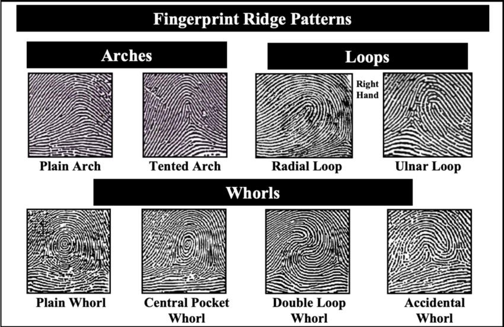

Public domain example of fingerprint ridge patterns (arches, loops, whorls). Telkom dataset images remain private.
Problem
Manual fingerprint validation is inefficient and error-prone at Telkom's scale. The project aimed to automate the full analysis of fingerprint images:
- Classify fingerprint images into parent and subclass categories (pattern type).
- Detect swirl direction (left/right) for more granular detail classification.
- Segment key features (delta and core) and count ridges with automated instance segmentation.
My Contribution
- Requirement analysis: clarified objectives and evolving criteria with the supervisor and previous contributors.
- Model development: built a multi-stage pipeline:
- Parent and subclass classification with a SWIN Transformer (multi-class).
- Detail class (swirl direction) with SWIN binary classification.
- Instance segmentation with Detectron2 to locate delta and core features.
- Ridge-counting algorithms computed from the segmented images.
- Data handling: tackled imbalanced datasets and noisy labels with advanced sampling and regular feedback cycles.
- Research & upskilling: deepened knowledge of Vision Transformers (ViT, SWIN) and modern CV libraries (PyTorch, Detectron2), iterating on hyperparameters to fight overfitting.
Results
- Delivered a working prototype for fingerprint detection and classification meeting the supervisor's accuracy and segmentation requirements.
- Automated the multi-stage processing pipeline, enabling future scalability for workforce management and security systems.
- Built strong troubleshooting skills for complex, real-world AI problems such as imbalanced data and model instability.
Key Learnings
- Practical experience with state-of-the-art vision architectures (SWIN, ViT) in production-like environments.
- Iterative problem solving: revising model designs and seeking alternatives through technical setbacks.
- Stakeholder communication: constant engagement with supervisors and users to stay aligned on objectives.
"Every pattern, human or data, reveals something unique when you learn to look closely."